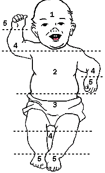
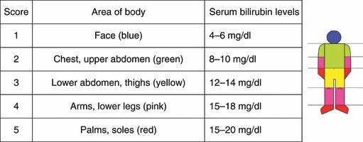

Neonatal Jaundice
Causes
For all jaundiced babies, consider whether infection may be the cause and investigate
(blood culture, lumbar puncture) and treat appropriately.
Remember that jaundice on day 1 is always pathological - think about haemolysis due to
ABO or Rhesus incompatibility or G6PD deficiency. Also consider congenital infections, especially syphilis.
Investigation
Any baby who appears visibly jaundiced should have a bilirubin level checked using the transcutaneous bilirubinometer.
If a bilirubinometer is not available, refer to the body area chart for jaundiced babies to judge upon the severity of jaundice.
If the bilirubin level is greater than the value shown in the chart below, the baby should be started on phototherapy.
Please take into account how many days old the baby is and whether they are term/ preterm/ low birth weight (<2.5kg)/ sick.
If the bilirubin is not high enough to warrant phototherapy, but is close to the threshold (within 3mg/dl), please check it again the following day.


Phototherapy treatment thresholds for jaundiced babies
|
Healthy term baby |
Preterm, LBW, sick |
| Day of life |
mg/dl |
mg/dl |
| Day 1 |
Treat any visible jaundice with |
phototherapy |
| Day 2 |
15 |
13 |
| Day 3 |
18 |
16 |
| Day 4 and after |
20 |
17 |
Once under phototherapy...
- The baby's eyes should be covered with a gauze pad to protect them from the light
- Ensure the baby is feeding well - top up with EBM via cup or NGT if necessary. Add
10% of the daily requirement to the fluids/ feeds the baby is getting to account for
transpiration due to phototherapy
- Babies under phototherapy should have their bilirubin level checked on a daily basis
- The bilirubinometer should be used on the chest and the forehead (which is not
directly exposed to the phototherapy) and whichever value is highest used
- Phototherapy should be stopped when the value is more than 3mg/dl below the
threshold shown above
Reference
Pocket book of hospital care for children, WHO, p58
{kind=link}
{kind=link}